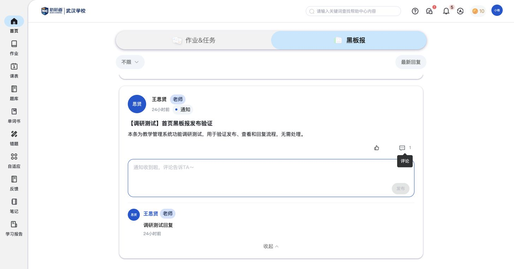
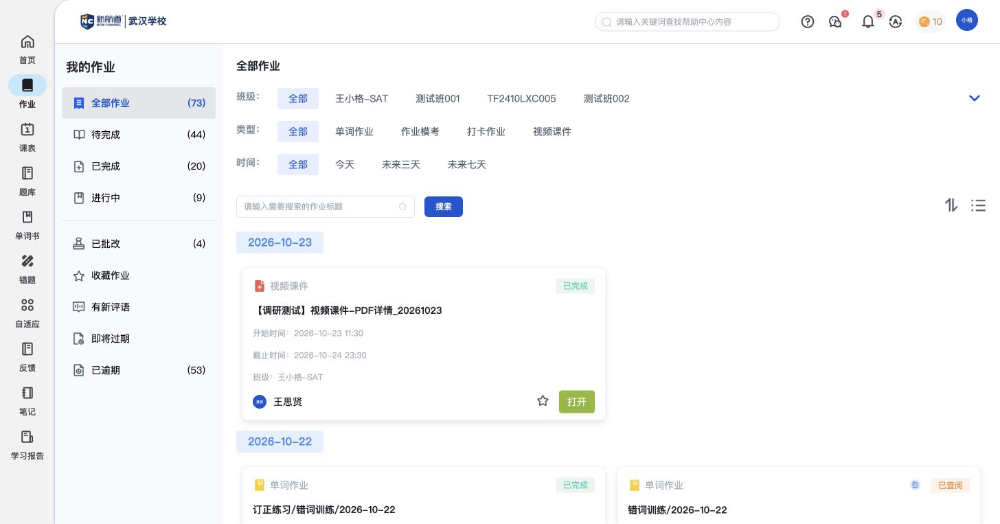

2026-10-23，在学生“小格（王小格）”账号进行实操，补充教师端已有测试样例的接收侧依据。
学生黑板报已显示教师发布到“测试班002”的“【调研测试】首页黑板报发布验证”，并能展开原有“调研测试回复”。点击评论图标可展开输入框和发布按钮；本次没有发送学生评论。

教师布置的“【调研测试】视频课件-PDF详情_20261023”已显示在学生首页任务和黑板报。点击黑板报卡片后进入“我的作业”列表，对应任务有边框定位，仍需点击打开。
点击打开后，新标签页直接呈现PDF，浏览器文档查看器显示308页以及翻页、缩放、下载和打印入口。本次未手动交卷；重新进入学生作业列表后，该任务显示已完成，待完成由45变为44，已完成由19变为20。只记录这一PDF样例的变化，不推定视频播放进度规则。

